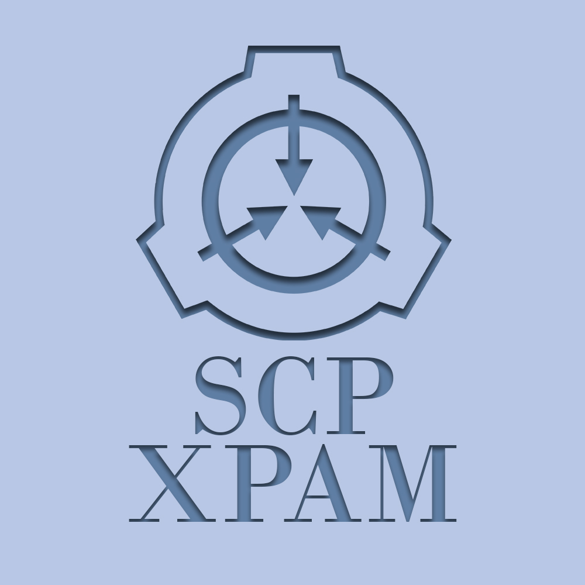

Скверная Артёмия
SCP - 1

Уровень допуска: четвёртый.
Класс: кетер.
Возраст: [ДАННЫЕ УДАЛЕНЫ].
условия содержания
Cодержать в комнате 3х3х3 метра, стены которой состоят из титанового сплава, совмещённого с армированными бетонными конструкциями. Дверь в комнату должна состоять из армированного титанового сплава. На входе должны стоять 4 специально обученных охранника в обмундировании максимального класса. В камере запрещено устанавливать средства аудио- и видеосвязи. Каждый день следует предоставлять объекту пищу дважды. В обед: две сосиски и хлеб. На ужин: вода, куриное яйцо, пачка закрытых чипсов. КАТЕГОРИЧЕСКИ запрещено проводить завтрак.
описание
Объект SCP-1 был найден в городе Минске, Беларусь. На данный момент известно, что объект родился в ████-м году, по его информации. Объект общительный, сам предоставляет данные о себе. Выглядит как особь мужского пола 20-ти лет.
Когда был найден, то назвался как "Скверная Артёмия". КАТЕГОРИЧЕСКИ не воспринимает, когда его называют "Скверная АртЕмия". В таком случае применяет меметическое воздействие на всех лиц в радиусе 20-ти километров. Начинает выкрикивать различные фразы, такие как: "бл* у", ████, ████. Так же начинает активно дышать в микрофон и жевать зубочистки. Меметическое воздействие проявляется таким образом, что лица рядом начинают производить аналогичные действия, со временем превращаясь в неконтролируемых животных, каким является SCP-1.
приложение
инцидент #1
SCP-1 встретил SCP-███ на Львовском сервере в игре ARMA 2. В скором времени SCP-1 начал оказывать меметическое воздействие в течение 6-ти лет. В последствии субъект SCP-███ стал слушать музыку исполнителя SCRALXD, которую женевская конвенция признала какофонией и психологическим оружием класса █. Так же субъект начал просматривать прямые трансляции на хостинге TWITCH, а так же пререкаться с родителями.
инцидент #XXXX
SCP-1 вошёл в контак с субъектом ХХХХ. Субъект умер по причине "отвалилась ████".
SECURE.CONTAIN.PROTECT XPAM CEO INC.